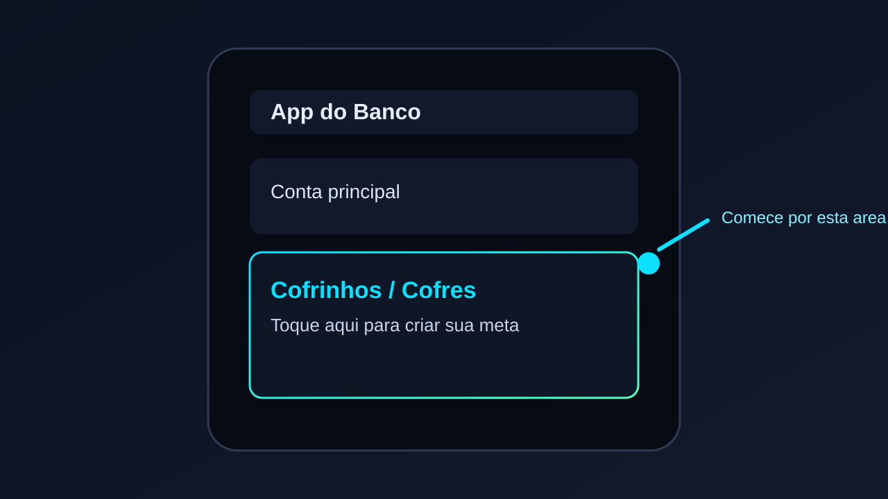
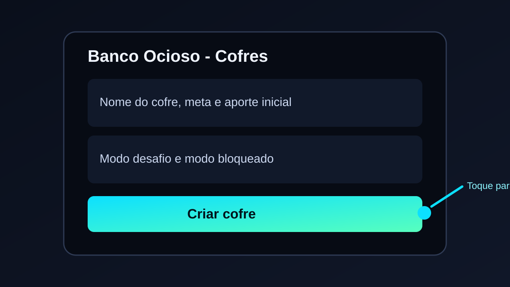
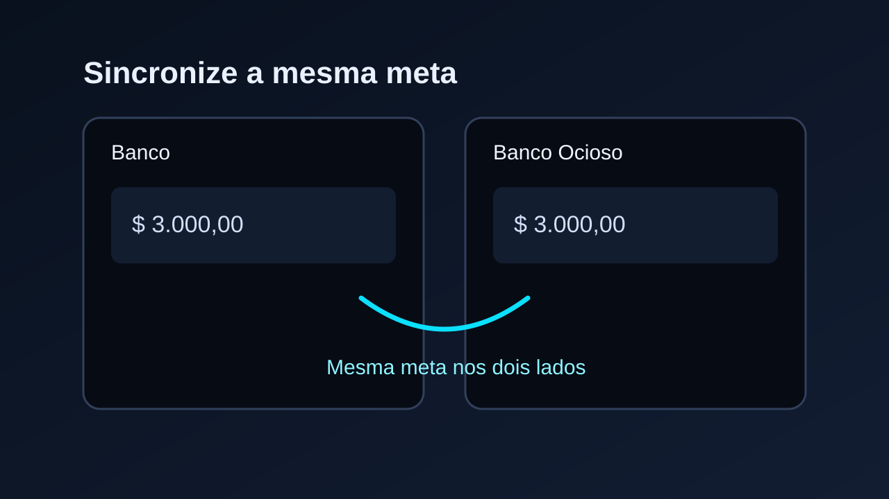
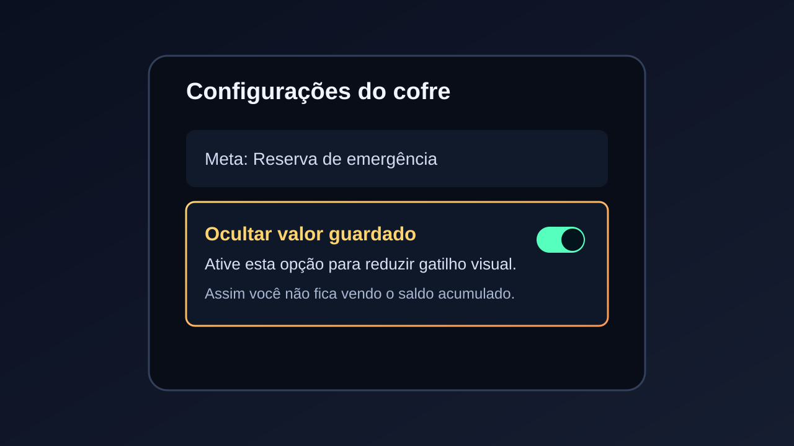
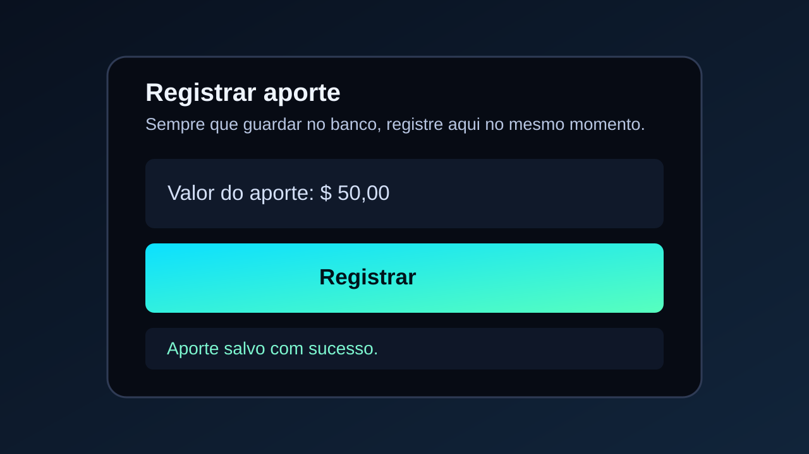

Passo 1
Abra seu app do banco
Comece pelo aplicativo do seu banco e acesse a área de cofrinho/cofre para criar a base da meta.

Passo 2
Crie o mesmo cofre no Banco Ocioso
Abra a aba Cofres aqui e registre o mesmo objetivo, para manter seu acompanhamento sincronizado.

Passo 3
Defina a mesma meta de valor
Use o mesmo valor no banco e no Banco Ocioso para garantir que o progresso represente sua meta real.

Passo 4
Ative ocultar saldo no banco
Se seu banco permitir, deixe o valor do cofre oculto para reduzir gatilho e manter disciplina.

Passo 5
Registre todo aporte também aqui
Sempre que guardar no banco real, registre o mesmo aporte no Banco Ocioso para manter a simulação fiel.
